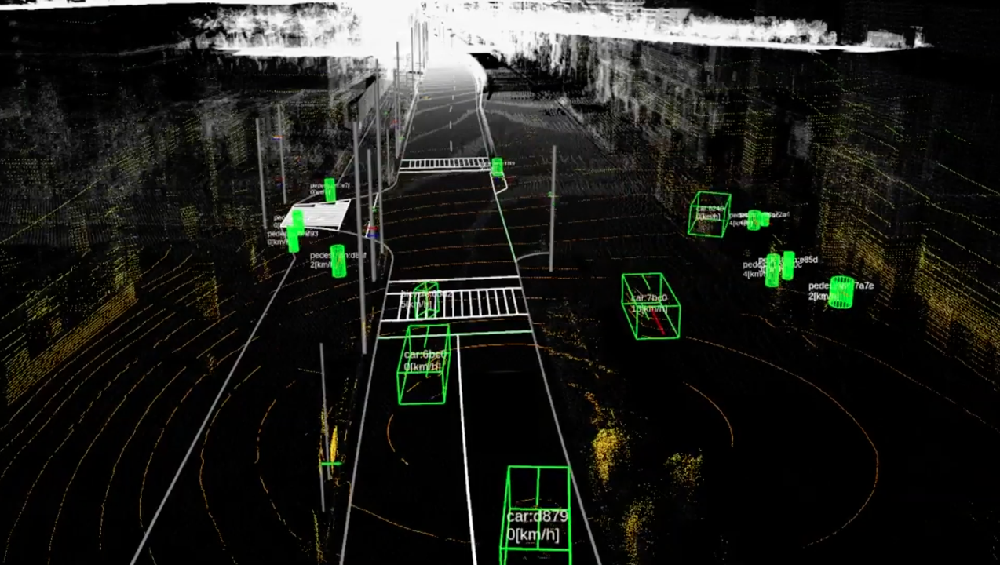
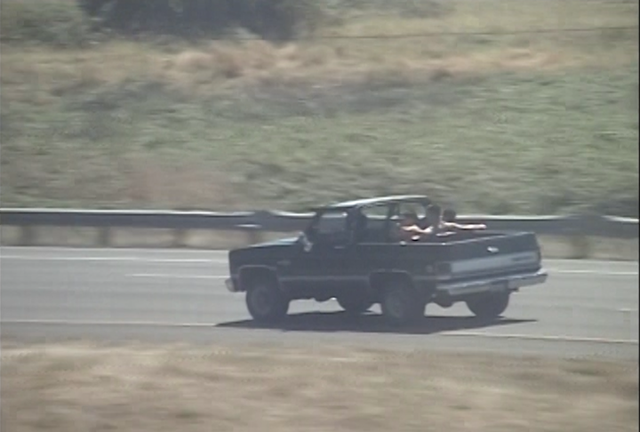

Correspondences
Kingdom, Clouds, Sirens, Pirates, and Dream Sheets
65min., 2021, 2K/24p, Color, HD/Foundfootage, Germany (EN)
|
An extended correspondence film dedicated to the residents of Liebig 34, an anarcho-feminist housing co-operative and squat in Berlin that was evicted shortly after the filmmaker’s attempted move to the city. Comprising both found and filmed images, the film explores concepts of rent, refuge and resistance in Berlin and beyond. |
// Screenings |
Dear Kristina (No.1-11)

40min., 2021-2021, 2K/24p, Color, HD/Foundfootage, United Kingdom (EN)
|
A series of short experimental correspondences between OK Pedersen and Mackenzie Reid Rostad during the years 2020-2021. Writing to each other from across the Atlantic, the filmmakers explore their individual relationships with technology, media, migration, the future, and collective dreaming. Their exchange culminated in two feature films, Kingdom, Clouds, Sirens, Pirates, and Dream Sheets and Cloud Gate 2. |
// Screenings |


Dear Nyon
02:44, 2020, 2K/24p, Color, MiniDV
|
Nyon, I’m sad not to be present with you in Switzerland and share some of the stories which surround my film. Instead, here are some views which led to its production. |
For Andrew

05:30, 2018, DCP, 2K/24p, Color, 16mm
|
For Andrew |
// Screenings |
All That Is Wild
05:41, 2016, DCP, 2K/24p, Color, miniDV
Distributed by Video Out Distribution
|
A brief reflection on the curation of nature for the purposes of leisure and the many conflicting perspectives of the spectator curator. All That is Wild is a short correspondence film to a dear friend for which I shared a trip to Portland Oregon and, mistakenly, the state zoo. We walked through hardly a voicing a word until reaching the polar bear exhibit. A crowd was pressed against the glass which had a note taped from the opposite side. “The zookeeper has extended her free time within the exhibit as a result of the recent loss of her sister Tasul”. This is a film for Tasul and is a combination of material photographed during the trip and found footage from my home province of British Columbia. |
// Screenings |